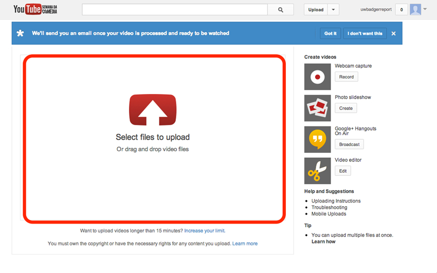
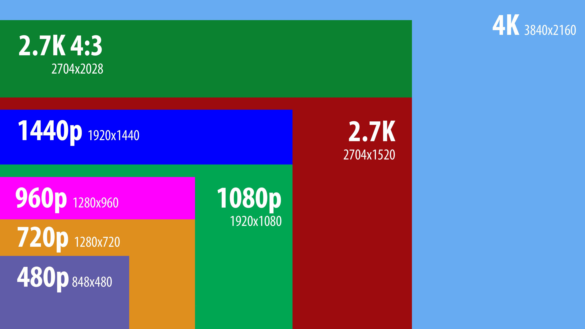
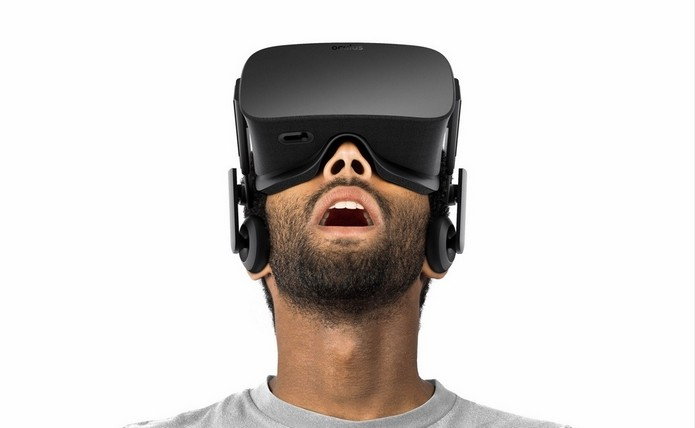
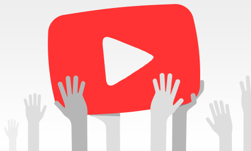
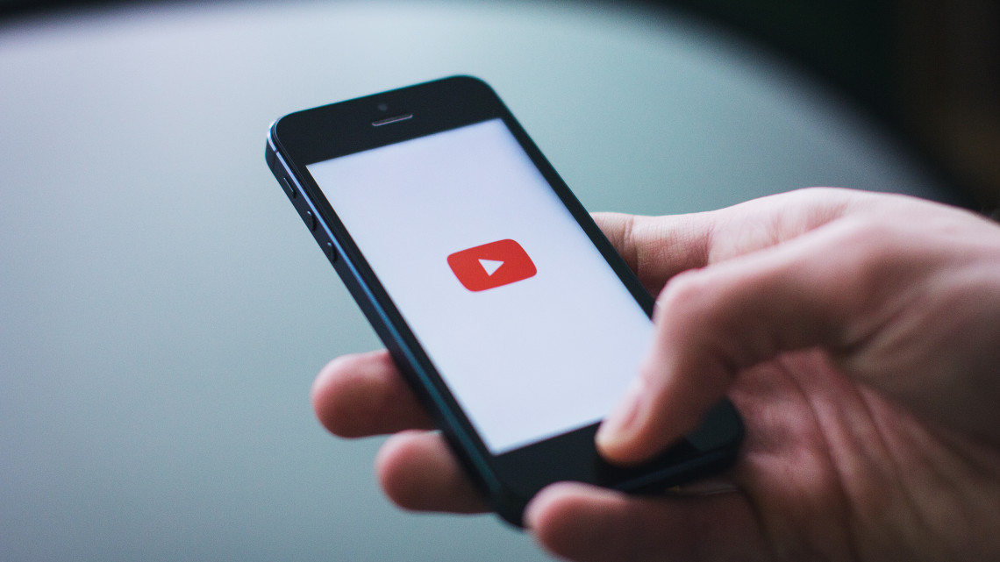
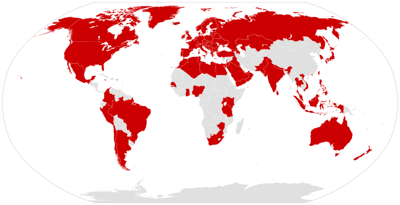
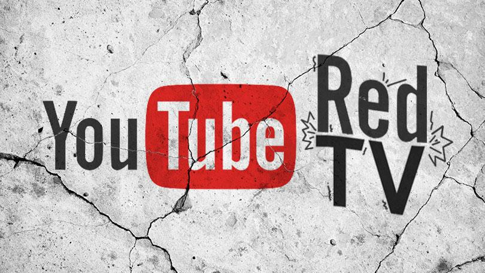

Explore através de um conjunto de 8 características os factores mais importantes do funcionamento do YouTube, que permite a milhões de utilizadores assistir vídeos diariamente.
Playback
Para se fazer uso das capacidades multimédia da maioria dos browsers, o YouTube adotou o HTML5 para o usofruto de todas potencialidades.
Os vídeos são transmitidos utilizando Dynamic Adaptive Streaming over HTTP, para que se otimize a qualidade para a rede disponível.
A maioria dos utilizadores tem a possibilidade de fazer upload de vídeos até 12 horas de duração, bem como transmissões ao vivo.
O YouTube aceita vídeos em AVI,MP4,MPEG-PS,QuickTime e FLV.WebM e 3GP são suportados através do telemóvel.
Todos os formatos de vídeo usam progressive scanning
Neste momento o YouTube suporta vídeos até 8K (7680×4320 pixels) de resolução num formato 16:9 com uma frequência de 60 frames.
O fluxo de vídeo padrão é codificado no formato VP9 com áudio Opus estéreo.
Para se realizar transmissões ao vivo é necessário possuir um codificador de audio e vídeo para as codificações e descompactações necessárias.
No que toca ao 3D e aos vídeos 360° estes podem ser visualizados através de óculos 3D/realidade virtual.
A 13 de setembro de 2016 o YouTube adicionou aos canais um novo separador, ainda
em versão beta. Este novo separador “Comunidade” é como que uma rede social em
que os utilizadores podem publicar texto, imagens (GIFs incluídos), vídeos em direto
e muito mais.
Grande parte do sucesso do YouTube deve-se ao facto de estar disponível em (quase) todas as plataformas. Mas nem sempre foi assim; o YouTube, desde a sua criação que teve de ir melhorando aspetos na sua acessibilidade visto que isto era fundamental para a sua expansão.
Em junho de 2007, o CEO da Google, Eric Schmidt, esteve em Paris para lançar o novo sistema de localização. A interface do site está assim, neste momento,
disponível com versões localizadas em 89 países. Esta inferface vai mudando consoante a localização de onde o site é acedido.
O YouTube Red e a YouTube TV são dois serviços de subscrição paga. No entanto, o primeiro é direcionado ao site e permite, entre outras coisas, assistir a vídeos sem publicidade. O segundo é um serviço de televisão que oferece transmissões em direto das grandes cadeias de televisão americana e muito mais.
Antigamente, para ver vídeos do Youtube num PC era necessário ter o plugin Adobe
Flash Player. Em Janeiro de 2010 o Youtube lançou uma versão experimental do
site, que fazia uso das capacidades multimédia dos browsers que utilizavam HTML5
como linguagem padrão.
Isto permitiu que os vídeos pudessem ser vistos sem a
instalação do Adobe Flash Player ou qualquer outro plugin.
O site do Youtube
tinha uma página que permitia a alguns browsers optarem por um teste de HTML5.
No entanto, apenas browsers que suportavam HTML5 video e utilizavam os formatos
MP4 e WebM permitiam assistir aos vídeos e nem todos estavam disponíveis.
A 27 de janeiro de 2015, o Youtube anunciou que o HTML5 seria o método padrão
para todos os browsers que o suportavam. Com esta mudança os vídeos passaram
a ser transmitidos utilizando
Dynamic Adaptive Streaming over HTTP, um sistema
que otimiza a qualidade para a rede disponível.

uploading
UPLOADING
Todos os utilizadores do YouTube podem fazer upload de vídeos de até 15 minutos
de duração cada. Os utilizadores que seguem as regras, em conformidade com as
diretrizes da comunidade poderão ter a possibilidade de fazer upload de vídeos até
12 horas de duração, bem como transmissões ao vivo, o que exige a verificação da
conta, normalmente através de um telemóvel.
Quando em 2005, o YouTube foi lançado, tornou-se possível fazer upload de vídeos
mais longos, mas um limite de dez minutos foi introduzido em março de 2006 após
a empresa perceber que a maioria dos vídeos que excediam este comprimento eram
uploads não autorizados de programas de televisão e filmes.
Mais tarde em julho de 2010 o limite de 10 minutos de vídeo foi aumentado para 15
minutos. Os vídeos podem ter, no máximo, 128 GB de tamanho. As legendas de
vídeo são feitas usando a tecnologia de reconhecimento de fala quando carregado.Este reconhecimento geralmente não é perfeito, então o YouTube oferece diversas
opções para inserir manualmente as legendas para maior precisão.
O YouTube aceita vídeos que são enviados na maioria dos formatos, tais como AVI, MP4, MPEG-PS, QuickTime e formato de arquivo FLV. É também suportado
arquivos WebM e 3GP, permitindo o upload através do telemóvel.
Tanto vídeos com progressive scanning como interlaced scanning podem ser carregados. No entanto, para a melhor qualidade de vídeo, o YouTube sugere que todos
os vídeos sejam carregados no primeiro formato.
Todos os formatos de vídeo no YouTube usam assim
progressive scanning.

QUALIDADE DE VÍDEO
QUALIDADE DE VÍDEO
O YouTube originalmente oferecia vídeos apenas com um nível de qualidade, exibida
numa resolução de 320x240 pixels usando o codec Sorenson Spark (uma variante de
H.263), com áudio MP3 mono.
Em junho de 2007 o YouTube adicionou uma opção de ver vídeos em formato 3GP
a partir de um telemóvel.
Em março de 2008, um modo de alta qualidade foi adicionado, que aumentou a
resolução para 480x360 pixels.Em novembro de 2008 foi finalmente adicionado o suporte 720p HD. No momento
do lançamento do 720p, o reprodutor de vídeo do YouTube foi alterado de 4:3 para
16:9. Com este novo recurso, o YouTube começou a mudança de formato de compressão padrão para H.264/MPEG-4 AVC.
Em novembro de 2009, foi adicionado o suporte 1080p HD. Em junho de 2010 o
YouTube anunciou o lançamento de um conjunto de vídeos em formato 4K, o que
permite uma resolução de até 4096 x 3072 pixels.Em junho de 2014 o YouTube introduziu vídeos a 60
frames por segundo, para reproduzir videojogos com uma frequência comparável às das melhores placas gráficas.
Os vídeos estão disponíveis num extenso espetro de níveis de qualidade. Os antigos
nomes de standard quality (SQ), high quality (HQ) e high definition foram substituídos por valores numéricos que representam a resolução vertical do vídeo. O fluxo
de vídeo padrão é codificado no formato VP9 com áudio Opus estéreo; Se VP9 /
WebM não for suportado no browser/ dispositivo ou o agente do browser reportar
a utilização de Windows XP, então é usado AVC H.264 / MPEG-4 com áudio AAC
estéreo em vez disso.

REALIDADE VIRTUAL
DIRETO | 360° | 3D
A primeira transmissão em direto realizou-se a 22 de Novembro de 2008 onde uma
página produzida pelos directores do YouTube, mostrou um espectáculo ao vivo no
site.
Celebridades do YouTube como "What the Buck", e celebridades mundiais
como Akon e Wil.I.Am estiveram presentes. Os MythBusters também fizeram o seu
programa. Isto pôde ser realizado graças à utilização do programa "flip".
Contudo, para realizar transmissões ao vivo no YouTube, é preciso baixar e instalar
um codificador de áudio e vídeo no seu computador. Os programas são responsáveis
por codificar arquivos de mídia, compactando o formato original e descompactando
na hora da reprodução.
No caso das transmissões ao vivo no YouTube, os codificadores são responsáveis por comprimir os vídeos no formato ideal.
Quando tudo estiver pronto, poderá então conectar o codificador à sua conta no
YouTube para realizar uma transmissão ao vivo. Temos assim duas possibilidades:
"Transmitir Agora", mais rápida e com menos opções de configuração, e "Eventos",
que podem ser testados antes de ir ao ar (online).
Num vídeo publicado a 21 de julho de 2009, Peter Bradshaw, engenheiro de software do YouTube poderiam carregar vídeos em 3D. Os vídeos podem ser visualizados de maneiras diferentes, incluindo o mais conhecido método que consiste no uso de óculos 3D. Assim, quando desejávamos assistir a estes vídeos, tornava-se necessário a ultilização de óculos 3D. A novidade está disponível para todos os utilizadores e só funciona para vídeos com resolução de 1080p. Caso os servidores no YouTube já possuam o vídeo convertido, um botão 3D aparecerá ao lado do seletor de qualidade de vídeo. Basta clicar, colocar os seus óculos mágicos e assistir ao vídeo.
Em janeiro de 2015, o Google anunciou que vídeos em 360 graus seriam também suportados pelo YouTube. Em 13 de março de 2015, tornou-se possível a visualização de vídeos 360 graus através do Google Cardboard, um sistema de realidade virtual. O YouTube 360 também pode ser visualizado a partir de todos os óculos realidade virtual. A transmissão ao vivo de vídeo de 360 graus é suportada até 4K.
Note-se que são vídeos tipicamente gravados, usando equipamentos especiais com várias câmeras ou utilizando uma câmera dedicada, que contém carias lentes embutidas. Estes vídeos possuem um formato VR-like, que permite ter um vídeo com vista em círculo – em cima, em baixo, esquerda, direita e atrás.

Comunidade
COMUNIDADE
A 13 de setembro de 2016 o YouTube adicionou aos canais um novo separador, ainda
em versão beta. Este novo separador "Comunidade" é como que uma rede social em
que os utilizadores podem publicar texto, imagens (GIFs incluídos), vídeos em direto
e muito mais. Antes do lançamento desta função, vários youtubers foram contacta-
dos de forma a sugerirem ferramentas que poderiam ser úteis na mesma.

APP DO YOUTUBE no smartphone
PLATAFORMAS
A maioria dos smartphones modernos tem a capacidade de aceder a vídeos do You-
Tube, seja através da aplicação ou do website. O YouTube Mobile foi lançado em
junho de 2007 e utilizava streaming RTSP para a visualização do vídeo. Nem todos
os vídeos do YouTube estão disponíveis na versão móvel do site.
Desde junho de 2007 que os vídeos do YouTube estão disponíveis em quase todos os
dispositivos da Apple. Isto exigiu que o conteúdo do YouTube fosse transcodiFIcado
no padrão de vídeo preferencial da Apple, H.264, processo que demorou alguns me-
ses.
Em julho de 2010 a versão móvel foi do site foi relançada em HTML5 o que para
além de já não precisar do Adobe Flash Player, veio otimizar os controlos touch
screen.
A versão móvel está também disponível na plataforma Android. Em setembro de 2012, YouTube lançou a aplicação para os iPhones, depois deste
deixar de ser uma das aplicações pré-instaladas no sistema operativo.
De acordo
com a GlobalWebIndex, entre abril e junho de 2013, o YouTube foi utilizado por
35 % dos utilizadores de smarthphones, tornando-se assim a terceira aplicação mais
utilizada.
Em janeiro de 2009 o YouTube lançou o "YouTube para TV", uma versão do site
adaptada para boxes e outros dispositivos baseados em televisão com navegadores
Web permitindo incialmente que os seus vídeos fossem vistos nas consolas como
PlayStation3 e Wii. O YouTube também está disponível como aplicação na Xbox
Live. A 15 de novembro de 2012 a Google lançou a aplicação oficial para a Wii, o
que permite aos usuários assistir vídeos do YouTube a partir do canal Wii. Também
existe uma aplicação disponível para Wii U e Nintendo 3DS que permite a visualização de vídeos do YouTube no browser disponível na Wii U usando HTML5. Em
outubro de 2014 o YouTube ficou disponível na PS4

países com localização
LOCALIZAÇÃO
Em junho de 2007, o CEO da Google, Eric Schmidt, esteve em Paris para lan-
çar o novo sistema de localização. A interface do site está assim, neste momento,
disponível com versões localizadas em 89 países.A interface do YouTube sugere qual versão local que deve ser atribuída, com base no
endereço IP do usuário. Em alguns casos, a mensagem "Este vídeo não está disponível no seu país"pode aparecer devido a restrições de direitos de autor ou conteúdo
inapropriado.
A interface do site do YouTube está disponível em 76 versões de
idiomas, incluindo amárico, albanês, armênio, bengali, birmanês, khmer, quirguês,
laociano, mongol, persa e usbeque.
O acesso ao YouTube foi bloqueado na Turquia entre 2008 e 2010, após a controvérsia sobre a publicação de vídeos considerados insultantes para Mustafa Kemal
Atatürk e algum material ofensivo para os muçulmanos. Em outubro de 2012, uma
versão local do YouTube foi lançada na Turquia, com o domínio youtube.com.tr. A
versão local está sujeita aos regulamentos de conteúdo da lei turca.

youtube red/tv
YOUTUBE RED E YOUTUBE TV
O YouTube Red é um serviço de assinatura de transmissão paga, exclusivamente
para o YouTube nos Estados Unidos, Austrália, México, Nova Zelândia e Coréia
do Sul. Fornece transmissão sem publicidade de todos os vídeos hospedados pelo
YouTube, reprodução off-line e reprodução de fundo de vídeos em dispositivos móveis, acesso a
streaming de música sem publicidade através do Google Play Music e
acesso a séries e filmes : "YouTube Red Original".
O serviço foi inicialmente lançado em novembro de 2014 como Music Key, oferecendo
apenas streaming sem anúncios de música no YouTube e no Google Play Music.
O serviço foi então revisado e relançado como
YouTube Red
em 31 de outubro de
2015, expandindo seu escopo para oferecer acesso sem anúncios a todos os vídeos do
YouTube, ao invés de apenas música. Além do streaming sem anúncios, o YouTube Red também participou com grandes
celebridades da plataforma para oferecer "YouTube Red Originals", filmes e espetá-culos exclusivos apenas para membros "Reds". O acesso a este conteúdo está incluído
com uma assinatura no YouTube Red, mas episódios e filmes individuais podem ser
adquiridos através do YouTube ou do Google Play Movies & TV em determinados
países onde as inscrições ainda não estão disponíveis.
A 28 de fevereiro de 2017, numa conferência de imprensa realizada no Youtube
Space em Los Angeles, foi anunciado o lançamento da Youtube TV, um serviço de
subscrição com o preço de 35 $/mês que estaria disponível nos 5 principais mercados
dos Estados Unidos (Nova Iorque, Los Angeles, Chicago, Filadélfia e São Francisco) a
5 de Abril do mesmo ano. O serviço oferece transmissões em direto de programação
das 5 maiores cadeias de televisão dos Estados Unidos assim como 40 canais por
cabo.
Durante a World Series 2017 (na qual o Youtube era o principal patrocinador),
anúncios da Youtube TV foram colocados atrás da Casa mãe.
O Famoso botão
`play' vermelho aprececia no centro do ecrã, fazendo lembrar o layout do site.